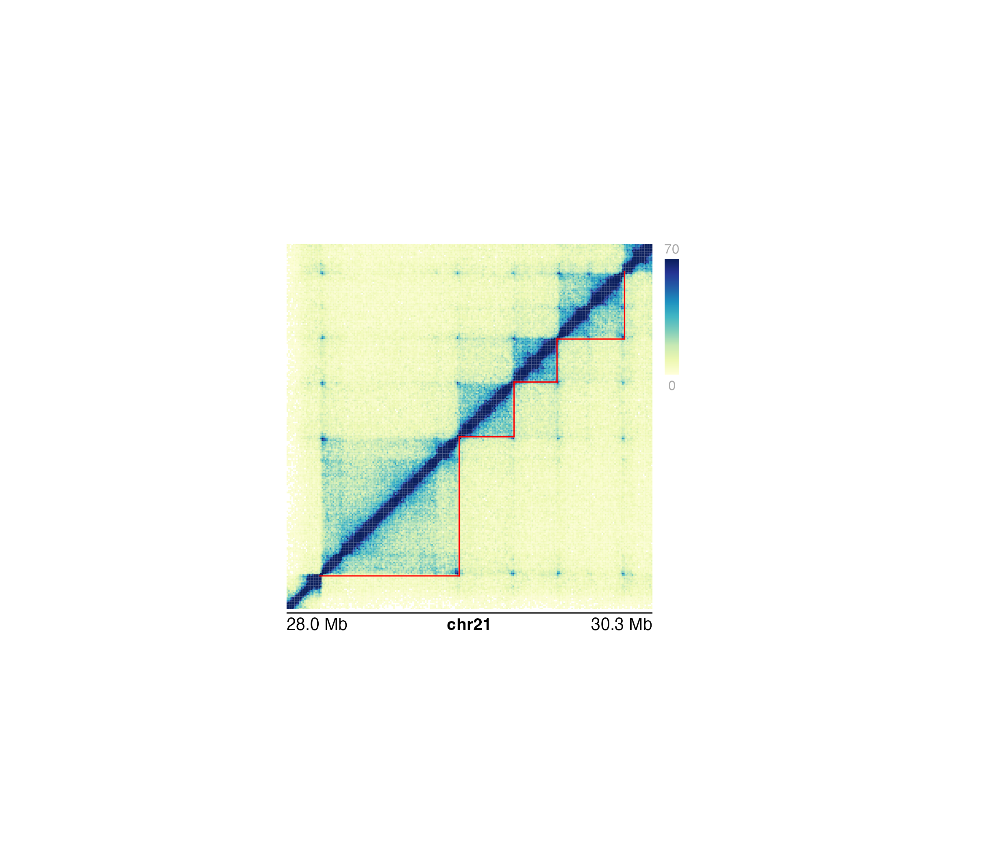

Annotate domains in a Hi-C plot
annoDomains( plot, data, half = "inherit", linecolor = "black", params = NULL, ... )
| plot | Hi-C plot object from |
|---|---|
| data | A string specifying the BED file path, a dataframe in BED format, or a GRanges object specifying domain ranges. |
| half | Character value specifying which half of hic plots
to annotate. Triangle Hi-C plots will always default to the entirety of
the triangular plot. Default value is
|
| linecolor | A character value specifying the color of the domain
annotations. Default value is |
| params | An optional pgParams object containing relevant function parameters. |
| ... | Additional grid graphical parameters. See gpar. |
Returns a domain object containing relevant
genomic region, placement, and grob information.
#>#>#> #>#> #> #>#> #> #> #> #> #> #> #>#>#> #>#> #> #>#>#>library(IRanges) domains <- GRanges("chr21", ranges = IRanges( start = c(28210000, 29085000, 29430000, 29700000), end = c(29085000, 29430000, 29700000, 30125000) ) ) ## Load Hi-C data library(plotgardenerData) data("IMR90_HiC_10kb") ## Create page pageCreate(width = 4.5, height = 4, default.units = "inches")## Plot and place a square Hi-C plot hicPlot <- plotHicSquare( data = IMR90_HiC_10kb, resolution = 10000, zrange = c(0, 70), chrom = "chr21", chromstart = 28000000, chromend = 30300000, assembly = "hg19", x = 0.5, y = 0.5, width = 3, height = 3, just = c("left", "top"), default.units = "inches" )#>#>## Annotate domains on bottom half 0f Hi-C plot annoDomains( plot = hicPlot, data = domains, half = "bottom", linecolor = "red" )#>## Annotate heatmap legend annoHeatmapLegend( plot = hicPlot, x = 3.6, y = 0.5, width = 0.12, height = 1.2, just = c("left", "top"), default.units = "inches" )#>## Annotate genome label annoGenomeLabel( plot = hicPlot, x = 0.5, y = 3.53, scale = "Mb", just = c("left", "top") )#>